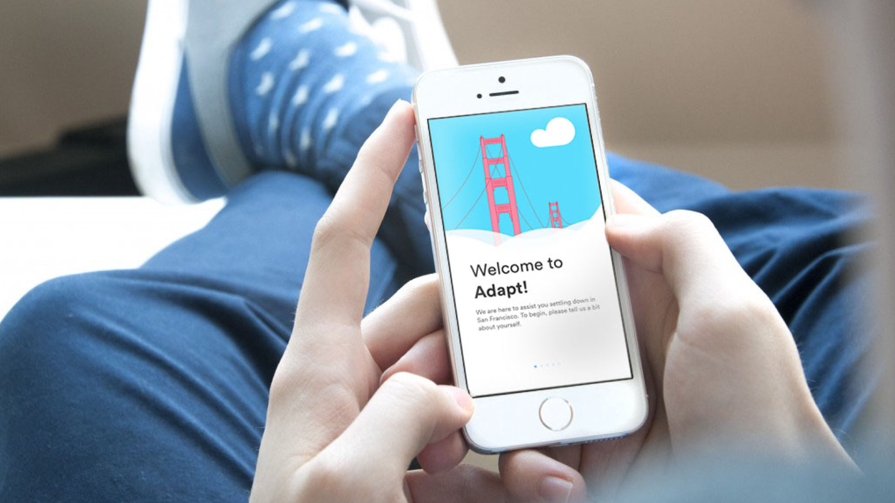
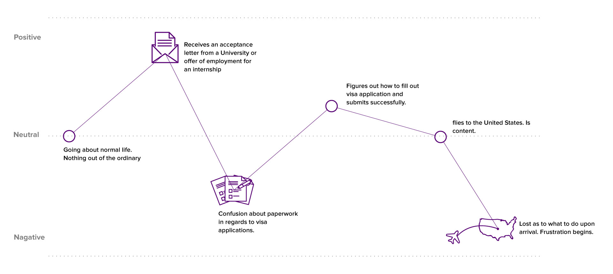

A mobile application that eases the process of settling into San Francisco for newcomers by providing them with relevant, useful information they need in the most convenient and accessible way possible.

Role:
UI/UX Design
Motion Design
Video Editing
Prototyping
Tools:
Sketch
Illustrator
Photoshop
Premiere Pro
After Effects
Framer
Team:
Dilara Dinc
Salathiel Wells
Amy Zhang
Nadhirah Shukri
Domain + User Research
We began our project by researching the process for newcomers to move to the USA for internship, student exchange, and etc. The research allowed us to form a basic understanding of our users' experience throughout the process. We created a survey to further understand our users and gain deep insights into their experiences. Based on the results, we identified two main pain points during the moving process, which were paperwork for visa applications and settling down when they arrive.
Above figure is the outline of users feelings through the process of pre- to post-USA entry.
The results also showed that 53% of our survey respondents responded with settling into a new city to be the most difficult part about moving from one country to another. As a result, we created a platform to help address any questions newcomers may have upon their arrival in the US, and provide recommendations for both mandatory and interesting things to do according to their needs.
Early Iterations
After we defined the scope and feature requirements that would fulfill our users’ needs, we began to quickly sketch the interfaces, which helped to give us a preliminary idea of what the final product might look like. Below is a sample of my sketches for the Discovery feature section.
Working with Salathiel, we brainstormed the visual look of the product, so it would appeal to our target audience university students and young professionals between 19 to 25 years-old. Our primary soft blue and pink colour were inspired from colours that exist in sunrise, which often represents a new day or beginning.
Once the first draft high fidelity mockups of the final product were done, we conducted user testing to figure out what aspects were working and which areas had issues. The results of the user testing gave valuable insights for us on how to move forward and refine our product, which ended up us deciding to cut out certain features for the MVP deliverable.
Below is the final prototype that Salathiel and I worked on using Framer.
Although this app has currently been designed for San Francisco, as it is one of the most popular cities in the U.S. for internship and student exchanges. Our goal is to gradually expand the app to include all cities in the U.S., and even Canada.
{kind=link}